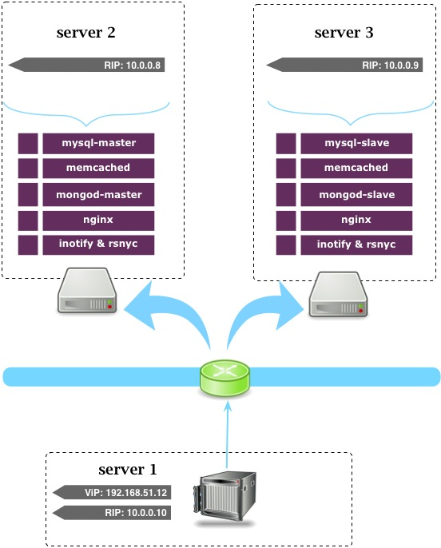
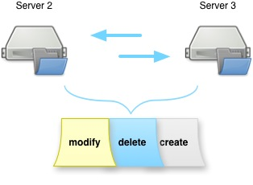

| - | server1 | server2 | server3 |
| vip | 192.168.51.12 | - | - |
| RIP | 10.0.0.10 | 10.0.0.8 | 10.0.0.9 |
| db | - | mysql-master | mysql-slave |
| cache | - | memcache | memcache |
| kv | - | mongo-master | mongo-slave |
| webserver | - | nginx | nginx |
| sync | - | inotify&rsync | inotify&rsync |
注： 基中mysql,cache,kv,webserver方案与双机方案类同，请参考双机方案。
1. 在server1,server2上设置默认路由
#vim /etc/sysconfig/network
GATEWAY=10.0.0.10
#重启路由
/sbin/route add default gw 10.0.0.10
#或
# 需重启服务器, 使配置文件生效
reboot
2. 在server1上安装ipvsadm
yum install ipvsadm
# vim /etc/init.d/lvs
#!/bin/bash
#
# LVS script
#
# chkconfig: 2345 99 90
# description: LVS sample script
#
case "$1" in
start)
# Bring up the VIP (Normally this should be under Heartbeat'scontrol.)
/sbin/ifconfig eth1:1 192.168.51.12 netmask 255.255.255.0 up
# Since this is the Director we must be
# able to forward packets.[10]
echo 1 > /proc/sys/net/ipv4/ip_forward
# Clear all iptables rules.
/sbin/iptables -F
# Reset iptables counters.
/sbin/iptables -Z
# Clear all ipvsadm rules/services.
/sbin/ipvsadm -C
# Add an IP virtual service for VIP 209.100.100.3 port 80
/sbin/ipvsadm -A -t 192.168.51.12:80 -s rr
# Now direct packets for this VIP to
# to the real server IP (RIP) inside the cluster
/sbin/ipvsadm -a -t 192.168.51.12:80 -r 10.1.1.2 -m
;;
stop)
# Stop forwarding packets
echo 0 > /proc/sys/net/ipv4/ip_forward
# Reset ipvsadm
/sbin/ipvsadm -C
# Bring down the VIP interface
ifconfig eth0:1 down
;;
*)
echo "Usage: $0 {start|stop}"
;;
esac
chmod u+x /etc/init.d/lvs
# 起动lvs director
/etc/initd/lvs start
在server1, server2上安装inotify, 监听文件变动（增删改移动等）事件。
yum -y install gcc autoconf automake make libtool unzip
wget https://github.com/rvoicilas/inotify-tools/archive/master.zip
mv master inotify-tools.zip
unzip inotify-tools.zip
cd inotify-tools-master/
./autogen.sh
./configure --prefix=/usr/local/inotify-tools
make && make install
在server2, server3上安装rsync, 当inotify事件触发时，与另一台机子做文件同步。在此我们直接监听ecstore整个目录。

yum -y install rsync
cd /usr/local/sbin
#vim /usr/local/sbin/inotify-rsync
#!/bin/sh
src=/var/www
des=/var/
ip=10.0.0.8
/usr/local/inotify-tools/bin/inotifywait -mrq --timefmt '%d/%m/%y %H:%M' --format '%T %w%f' -e modify,delete,create,attrib ${src} \
| while read file
do
rsync -qavz --delete --progress ${src} root@${ip}:${des}
done &
ecstore中日志默认是存文件的，位置在path/to/ecstore/data/log下，我们这里也使用rsync做同步即可。
server2与server3配置一至：
<?php
// ** 数据库配置 ** //
define('DB_USER', 'root'); # 数据库用户名
define('DB_PASSWORD', '12356'); # 数据库密码
define('DB_NAME', 'ecstore'); # 数据库名
# 数据库服务器 -- 99% 的情况下您不需要修改此参数
define('DB_HOST', '10.0.0.8');
define('WITH_REWRITE',false);
define('STORE_KEY', ''); #密钥
define('DB_PREFIX', 'sdb_');
define('DEFAULT_TIMEZONE', '8');
define('WITHOUT_CACHE',false);
#define('PAGE_CACHE_LOG', false);
define('WITHOUT_KVSTORE_PERSISTENT', false);
/* 以下为调优参数 */
define('DB_CHARSET', 'utf8');
define('DB_COLLATE', '');
define('DEBUG_JS',false); //是否开启javascript无压缩模式
define('DEBUG_CSS',false);//是否开启css无压缩模式
define('EDITOR_ALL_SOUCECODE',false);//是否使后台可视化编辑器变为源码编辑模式
define('DONOTUSE_CSSFRAMEWORK',false);//是否禁用前台系统css框架
define('WITHOUT_AUTOPADDINGIMAGE',false);//图片处理时不需要自动补白
define('ROOT_DIR', realpath(dirname(__FILE__).'/../'));
#您可以更改这个目录的位置来获得更高的安全性
define('DATA_DIR', ROOT_DIR.'/data');
define('THEME_DIR', ROOT_DIR.'/themes');
define('PUBLIC_DIR', ROOT_DIR.'/public'); #同一主机共享文件
define('MEDIA_DIR', PUBLIC_DIR.'/images');
define('SECACHE_SIZE','15M'); #缓存大小,最大不能超过1G
define("MAIL_LOG",false);
define('DEFAULT_INDEX','');
define('SERVER_TIMEZONE',8); #服务器时区
@ini_set('memory_limit','32M');
define('WITHOUT_GZIP',false);
define('WITHOUT_STRIP_HTML', true);
#数据库集群.
define('DB_SLAVE_NAME',DB_NAME);
define('DB_SLAVE_USER',DB_USER);
define('DB_SLAVE_PASSWORD',DB_PASSWORD);
define('DB_SLAVE_HOST', '10.0.0.9');
#按日期分目录，每个ip一个日志文件。扩展名是php防止下载。
define('LOG_FILE', DATA_DIR.'/logs/{date}/{ip}.php');
#log文件头部放上exit()保证无法下载。
define('LOG_HEAD_TEXT', '<'.'?php exit()?'.">\n");
#使用数据库存放改动过的模板
//define('THEME_STORAGE','db');
# kvstroe后台存储类
define('KVSTORE_STORAGE', 'base_kvstore_mongodb');
# cache后端存储类
define('CACHE_STORAGE', 'base_cache_memcache');
# cache memcache服务器配置
define('CACHE_MEMCACHE_CONFIG', '10.0.0.8:11211,10.0.0.9:11211');
#mongodb 服务器配置
define('MONGODB_OPTION_CONFIG','mongodb://10.0.0.8:27017');
# server
groupadd zabbix
useradd -g zabbix zabbix
wget http://nchc.dl.sourceforge.net/project/zabbix/ZABBIX%20Latest%20Stable/2.0.4/zabbix-2.0.4.tar.gz
tar zxvf zabbix-2.0.4.tar.gz
cd zabbix-2.0.4
yum install curl curl-devel net-snmp httpd mysql mysql-server mysql-devel php php-devel php-mysql
./configure --enable-server --enable-proxy --enable-agent --with-mysql=/usr/bin/mysql_config --with-net-snmp --with-libcurl
make && make install
/etc/init.d/httpd start
service mysqld start
/etc/init.d/iptables stop
chkconfig --level 35 iptables off
cd frontends/php
cp -a . <htdocs>/zabbix
#此时应能访问zabbix的web界面
#按界面上的setup一步步进行下去就行了。
#默认用户名、密码为： Admin zabbix
mysql -u root -p
mysql> CREATE DATABASE zabbix character set utf8;
mysql> grant all on zabbix.* to zabbix@localhost identified by 'zabbix';
mysql -u<username> -p<password> zabbix < database/mysql/schema.sql
mysql -u<username> -p<password> zabbix < database/mysql/images.sql
mysql -u<username> -p<password> zabbix < database/mysql/data.sql